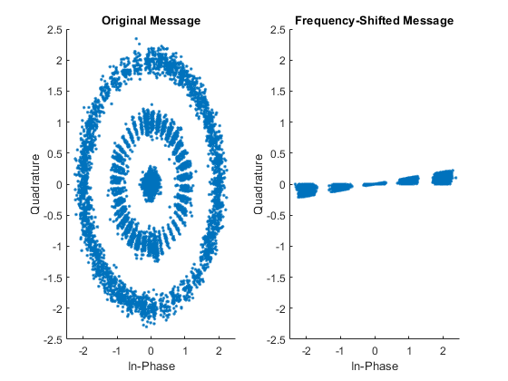
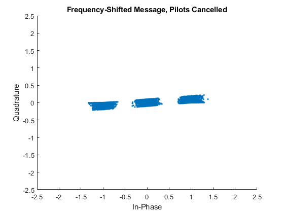

Simple CDMA System
Alon S. Levin ECE-408: Wireless Communications Spring 2020
Contents
- Prepare Environment
- Simulation Parameters
- Load Received Signal
- Filter & Downsample Received Signal
- Generate an M-Sequence
- Find Cross-Correlation Between Received Signal & M-Sequence
- Obtain Pilots
- Obtain Phase & Frequency Offsets
- Undo the Shifting
- Generate Pilots, Remove from Data
- Determine valid characters
- Despread
Prepare Environment
clear, clc, close all % Clear all current variables and outputs format compact % Prepare command line output
Simulation Parameters
chip_rate = 1e6; % Chip Rate [Hz] oversample_rate = 4; % Oversample rate RRC_filt_rolloff = 0.75; % RRC Filter Rolloff chips_per_frame = 255; % Number of chips per frame chips_per_char = 64; % Number of chips making up a character BPSK = 2; % Modulation scheme PN_gen_taps = [8, 7, 6, 1]; % Taps used to generate the M-sequence h = hadamard(8); % 8-ary Hadamard transform walsh_0 = h(1,:); % Pilot channel walsh_5 = h(6,:); % Data channel
Load Received Signal
msg_rx = load('Rcvd_Levin.mat').Rcvd;
Filter & Downsample Received Signal
% Design the FIR root raised cosine filter % Note: although the taps are given, I chose to compute it again for more % precision. Span was determined experimentally, until the correct % results were obtained. B_RCOS = rcosdesign(RRC_filt_rolloff, 6, oversample_rate, 'sqrt'); % Filter & downsample msg_filtered = filter(B_RCOS, 1, msg_rx); msg_downsampled = downsample(msg_filtered, oversample_rate); % Determine number of frames in the signal numFrames = length(msg_downsampled)/chips_per_frame;
Generate an M-Sequence
% The decoding taps should be the companion "mirror" taps of the original % taps mirror_taps = [PN_gen_taps(1), (PN_gen_taps(1) - PN_gen_taps(2:end))]; % Generate an arbitrary M-sequence LFSR_start = [1, 0, 0, 0, 0, 0, 0, 0]; % Output from the LFSR [~, m_seq] = shift_LFSR(LFSR_start, mirror_taps, chips_per_frame);
Find Cross-Correlation Between Received Signal & M-Sequence
Orthogonal codes have a cross-correlation of 0. By finding the cross-correlation with the correct M-sequence, the offset could be determined by looking for impulse-like response.
cross_corr = xcorr(m_seq, real(msg_downsampled(1:chips_per_frame))); [~, offset] = max(cross_corr); start_pt = chips_per_frame - offset + 1;
Obtain Pilots
Obtain the all-zero pilot frames at the beginning and at the end
% Beginning pilots msg_pilots_beg = msg_downsampled(start_pt:(start_pt+chips_per_frame-1)); msg_pilots_beg_dec = ~pskdemod(msg_pilots_beg, BPSK); % Ending pilots msg_pilots_end = msg_downsampled((start_pt+(numFrames-1)*chips_per_frame):end); msg_pilots_end_dec = ~pskdemod(msg_pilots_end, BPSK);
Obtain Phase & Frequency Offsets
phase_offset_beg = unwrap(angle(msg_pilots_beg)); phase_offset_end = unwrap(angle(msg_pilots_end)); freq_offset_diff_beg = diff(phase_offset_beg - pi*msg_pilots_beg_dec); freq_offset_diff_end = diff(phase_offset_end - pi*msg_pilots_end_dec); freq_offset_median = median([freq_offset_diff_beg, freq_offset_diff_end]); freq_offset_median = mod(freq_offset_median, 2*pi); msg_pilots_beg_shifted = msg_pilots_beg.*exp(-1j*freq_offset_median*(0:chips_per_frame-1)); phase_offset_median = median(angle(msg_pilots_beg_shifted)); % Report the offsets freq_offset_hertz = freq_offset_median * chip_rate / (2*pi); fprintf('Frequency offset: %f Hz\n', freq_offset_hertz); phase_offset_deg = phase_offset_median * 180 / pi; fprintf('Phase offset: %f degrees\n', phase_offset_deg);
Frequency offset: 108.987028 Hz Phase offset: -44.695325 degrees
Undo the Shifting
data_range = (start_pt+chips_per_frame):(start_pt+(numFrames-1)*chips_per_frame-1); msg_data = msg_downsampled(data_range); numDataBits = length(msg_data); freqshift = exp(-1j*(freq_offset_median*(chips_per_frame:chips_per_frame+numDataBits-1) + phase_offset_median)); msg_freqshift = msg_data .* freqshift; % Plot the results figure subplot(1,2,1) scatter(real(msg_data), imag(msg_data), '.') hold on title('Original Message') xlim([-2.5, 2.5]) ylim([-2.5, 2.5]) xlabel('In-Phase') ylabel('Quadrature') subplot(1,2,2) scatter(real(msg_freqshift), imag(msg_freqshift), '.') title('Frequency-Shifted Message') xlim([-2.5, 2.5]) ylim([-2.5, 2.5]) xlabel('In-Phase') ylabel('Quadrature')
Generate Pilots, Remove from Data
Pilots are generated as all zeros. BPSK encoding dictates: 0 --> +1 1 --> -1 This can be expressed as 1-2*data
pilots_modulated = pskmod(zeros(8*4, 1), BPSK); % Apply the Hadamard transformation on Channel 0 pilots_trans = pilots_modulated * walsh_0; % Demodulate the received transformed pilots pilots_demod = pskdemod(pilots_trans.', BPSK); % XOR the pilot with the M-sequence, and encode again pilots_generated = pskmod(double(xor(pilots_demod(1:end-1), m_seq)), BPSK); % Cancel the pilots from the data msg_dataonly = msg_freqshift + repmat(pilots_generated, 1, numFrames-2); % Present figure scatter(real(msg_dataonly), imag(msg_dataonly), '.') title('Frequency-Shifted Message, Pilots Cancelled') xlim([-2.5, 2.5]) ylim([-2.5, 2.5]) xlabel('In-Phase') ylabel('Quadrature')
Determine valid characters
% Reshape the message into frames. Each frame is a column vector msg_frames = reshape(msg_dataonly, chips_per_frame, []); % Remove the non-character bits msg_frames = msg_frames(1:(3*chips_per_char), :); msg_frames_bin = pskdemod(msg_frames, BPSK); numFrames_valid = size(msg_frames, 2); % Reshape so that each column vector is a character msg_chars = reshape(msg_frames, chips_per_char, []); % Determine which vectors are empty characters good_vects = find(all(abs(real(msg_chars)) > 0.5)); numChars = size(good_vects, 2); numBadChars = numFrames_valid*3 - numChars;
Despread
% Apply the m-sequence on the first frames msg_frames_xor_first = xor(... ~msg_frames_bin(:, 1:numFrames_valid-1), ... repmat(m_seq(1:(3*chips_per_char)).', 1, numFrames_valid-1)); % Apply the m-sequence on the last frame msg_frames_xor_last = xor(... ~msg_frames_bin(1:chips_per_char*(numBadChars/2), numFrames_valid), ... m_seq(1:chips_per_char*(numBadChars/2)).'); % Modulate msg_vect_xor = [msg_frames_xor_first(:);... msg_frames_xor_last]; msg_chars_mod = reshape(pskmod(double(msg_vect_xor), BPSK), 8, []); % Apply Hadamard msg_walsh = (walsh_5 * msg_chars_mod) / 8; % Decode the message msg_chars_bin = reshape(pskdemod(msg_walsh, BPSK), 8, []); msg_ascii = char(bi2de(msg_chars_bin.')).'; % Report the message fprintf('And the secret message is...\n\t%s\n', msg_ascii) % What is the meaning of this message? In fact, it is multifaceted: % 1)
And the secret message is... Let me give you a piece of advice, junior: your music make sense to no one... but yourself.